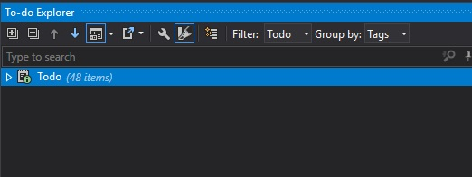

Get rid of TODOs from your codebase.
I’ve recently written an article about managing TODOs in the codebase with TODOExplorer. I’ve also proposed an idea of introducing code snippet for TODOs which helps to keep all TODOs in predefined format as well as provides more information about delayed task (author, receiver, date, issue tracker id). This article was a result of a few discussions with my programmer-colleagues and I hoped that that idea of TODOs snippet was worth sharing (I’ve been using it in my project for a while). After publishing this article I received a great feedback that give me a lot to think about. The message was simple - TODOs are a bad practice. And I think all those guys who stated this are god damn right. When we have two sources of requirements - issue tracker and TODOs in code - it’s hard to manage and sooner or later those sources will desynchronize. To avoid all the problems which could be the consequence of this desynchronization, we should get rid of the TODOs from the codebase instead of managing them in the nice way. How can we accomplish that? Using TODOExplorer we can locate all the TODOs and convert them into tasks in issue tracker. In the issue tracker we can provide more details and assign the task to a particular person who will be responsible for it. It will also be easier to schedule those tasks. I’m not sure if we should totally wipe out TODOs from the codebase or leave them in the following format:
// TODOs:ISSUE_ID
I will leave that question open for further conversation. I’ve checked my project with TODOExplorer and there is 48 TODOs. Probably most of them are out of date - they only cause confusion. I’ve decided that I will propose to my team on the next daily scrum the idea of moving all the TODOs into JIRA. If the feedback is positive, we should be able to do that till the end of next week. In order not to be alone in this case and to spread the idea of this best practice I want to make a call for action and challenge you. Let’s get rid of the TODOs together. In the comment section or on Twitter, please post info about the initial number of TODOs and declare the due date of moving all the TODOs into issue tracker. My initial state looks like below and I hope I can manage it till the end of next week (2017-12-22) together with my team.

// INFO: We've got only one week till Christmas, and there is a lot of advent calendar challenges in the internet. You can treat this idea of getting rid of TODOs as your advent assignment. Let's celebrate Christmas with clean code in the repository ;)
Credits 🔗︎
Thanks @Jarosław Stadnicki and @Krzysztof Seroka for your feedback which assured me that it was totally worth to raise the issue.
If you find this blog post useful and you think it's worth to share this idea with others, please don't hesitate to use these buttons below: